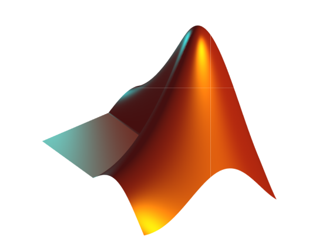

{{site.title}}
🇫🇷 (native) - 🇬🇧(pro) - 🇪🇸 (basic){{site.description}}
{{site.description}}
I am a curious engineering manager who wants to work on scientific issues that meet the emerging global challenges of the next 15 years such as stability of governance systems, climate change, environmental protection, and the evolution of agriculture and health. Structured and organized, I believe in success by example, sharing knowledge and effectiveness by collective intelligence.
In 2015, after completing my 2nd year internship in engineering school in Prague on the recognition of the movements of users taking public transport, I did an apprenticeship program in Capgemini in Montpellier last year. At the end of the apprenticeship, I was then hired as a software engineer in the same company on behalf of banking clients and insurers.
In 2016, when my agency manager proposed a blockchain project to me, I was immediately interested in this innovative technology, much more than in the virtual currency aspect. Positioning allowed me to begin my work in coordinating a remote team for a hackathon on Hyperledger Fabric Blockchain and few times after I was jumping in a blockchain project for a bank in Paris with an european team.
Then in 2018, I joined Aktan - a service design company - to manage a blockchain project in the development agriculture until it was put in place I've been talking about new issues around the automatic processing of languages and emotions...
Blockchain
Data Science
Natural Langage Processing
Management
Lead by example
Lead by Documentation
Traditional Project Management
Agile
Honesty
Pedagogy
Collaborative intelligence
Trust
Slack

Trello
Google Docs
Notion
Python
JavaScript/TypeScript
Golang
Matlab
Docker
CloudFoundry
Terraform